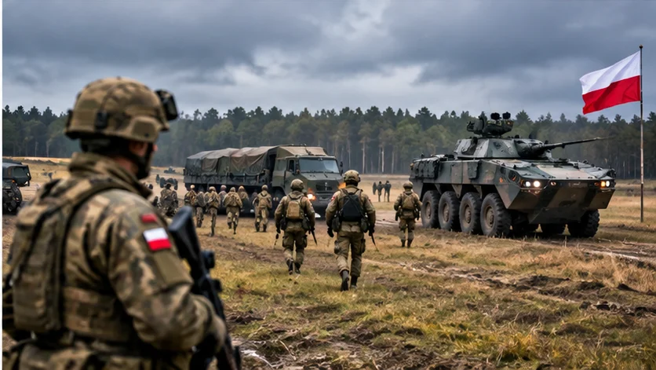

TROOPS ON ALERT!
European allies rehearse a possible postwar Ukraine mission as security questions remain unresolved

Original AI editorial illustration; not documentary photography.
TEXAS NEWS STUDIO — November 6, 2026. Original analysis and reporting context based on the attributed source below.
Planning for a mission that does not yet exist
The Associated Press reported that Britain and France are leading preparations for a November exercise in Poland involving roughly 2,800 troops from ten European countries. The training concerns logistics, command and air support for a potential mission in Ukraine after a ceasefire.
Not a deployment order
The proposed force would be part of a wider coalition effort, rather than a NATO combat deployment. Its stated objectives include helping rebuild Ukrainian military capabilities and supporting tasks such as airspace reopening and mine clearance. The plan remains conditional on a ceasefire and political agreements that have not been secured.
The central dilemma
European governments want any settlement to be durable. But military personnel on Ukrainian soil could face significant risks if fighting resumes. Russia has warned that foreign troops could be considered targets, creating difficult questions about rules of engagement and the extent of U.S. support.
Diplomacy is moving in parallel
Separately, the United States has planned talks with Russia and Ukraine in Abu Dhabi on November 10–11, according to Reuters. Security guarantees, humanitarian issues and de-escalation are expected subjects. Those talks do not guarantee an agreement, and the parties remain divided on major issues.
What comes next
The exercise demonstrates contingency planning, not an imminent troop deployment. The most important developments will be any ceasefire terms, written security commitments and public decisions by participating governments.